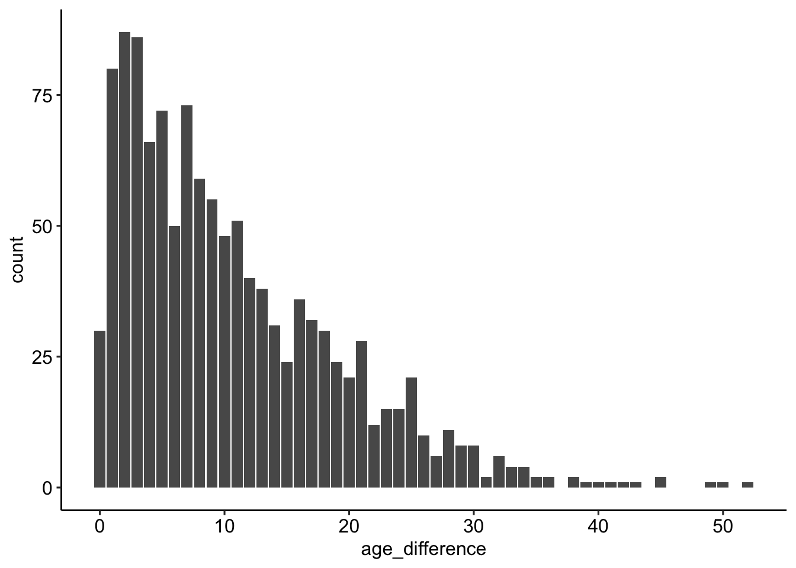
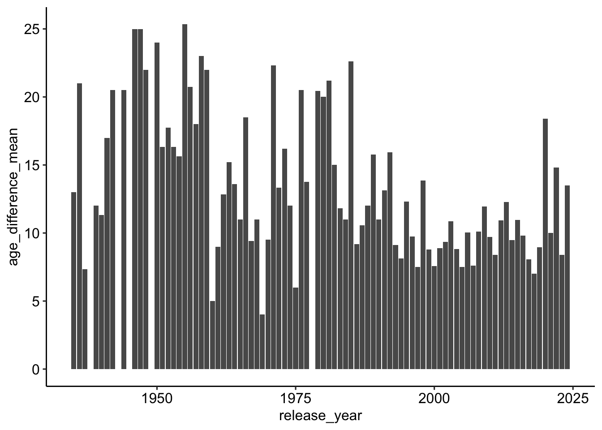
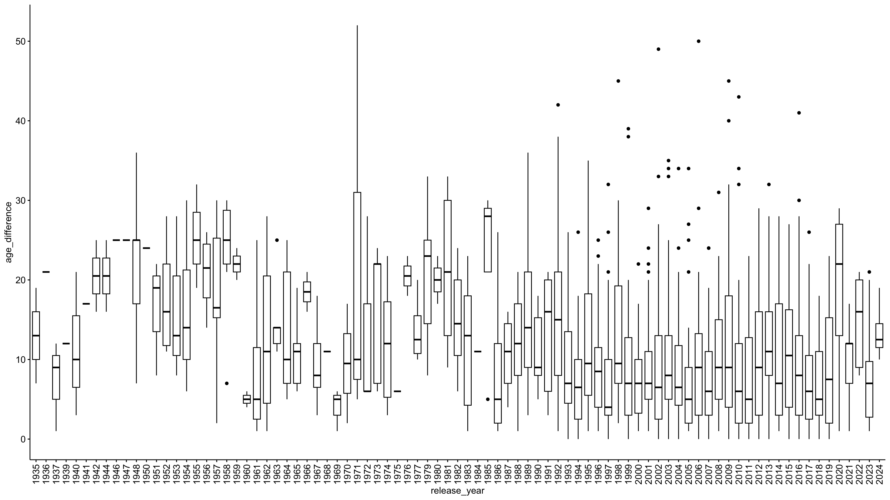

pacman::p_load(
here,
magrittr,
tidyverse,
janitor,
easystats,
sjmisc,
ggpubr)🔨 Working with R
Tutorial - Session 03
Background
Todays’s data basis: Hollywood Age Gaps
An informational site showing the age gap between movie love interests.
The data follows certain rules:
- The two (or more) actors play actual love interests (not just friends, coworkers, or some other non-romantic type of relationship)
- The youngest of the two actors is at least 17 years old
- Not animated characters
- The best way to learn R is by trying. This document tries to display a version of the “normal” data processing procedure.
- Use
tidytuesdaydata as an example to showcase the potential
Packages
- The
pacman::p_load()package is used to load the packages, which has several advantages over the conventional method withlibrary(): - Concise syntax
- Automatic installation (if the package is not already installed)
- Loading multiple packages at once
- Automatic search for dependencies
Codechunks aus der Sitzung
Die erste “Runde” der Datenaufbereitung
Datenimport via URL
| Variable | Description |
|---|---|
movie_name |
Name of the film |
release_year |
Release year |
director |
Director of the film |
age_difference |
Age difference between the characters in whole years |
couple_number |
An identifier for the couple in case multiple couples are listed for this film |
actor_1_name |
The name of the older actor in this couple |
actor_2_name |
The name of the younger actor in this couple |
actor_1_birthdate |
The birthdate of the older member of the couple |
actor_2_birthdate |
The birthdate of the younger member of the couple |
actor_1_age |
The age of the older actor when the film was released |
actor_2_age |
The age of the younger actor when the film was released |
# Import data from URL
age_gaps <- read_csv("http://hollywoodagegap.com/movies.csv") %>%
janitor::clean_names()
# Check data set
age_gaps# A tibble: 1,199 × 12
movie_name release_year director age_difference actor_1_name actor_1_gender
<chr> <dbl> <chr> <dbl> <chr> <chr>
1 Harold and … 1971 Hal Ash… 52 Bud Cort man
2 Venus 2006 Roger M… 50 Peter O'Too… man
3 The Quiet A… 2002 Phillip… 49 Michael Cai… man
4 Solitary Man 2009 Brian K… 45 Michael Dou… man
5 The Big Leb… 1998 Joel Co… 45 David Huddl… man
6 Beginners 2010 Mike Mi… 43 Christopher… man
7 Poison Ivy 1992 Katt Sh… 42 Tom Skerritt man
8 Dirty Grand… 2016 Dan Maz… 41 Robert De N… man
9 Whatever Wo… 2009 Woody A… 40 Larry David man
10 Entrapment 1999 Jon Ami… 39 Sean Connery man
# ℹ 1,189 more rows
# ℹ 6 more variables: actor_1_birthdate <date>, actor_1_age <dbl>,
# actor_2_name <chr>, actor_2_gender <chr>, actor_2_birthdate <chr>,
# actor_2_age <dbl>Initiale Überprüfung der Daten
Sind die Daten “technisch korrekt”?
Überblick über die Daten
age_gaps %>% glimpse()Rows: 1,199
Columns: 12
$ movie_name <chr> "Harold and Maude", "Venus", "The Quiet American", "…
$ release_year <dbl> 1971, 2006, 2002, 2009, 1998, 2010, 1992, 2016, 2009…
$ director <chr> "Hal Ashby", "Roger Michell", "Phillip Noyce", "Bria…
$ age_difference <dbl> 52, 50, 49, 45, 45, 43, 42, 41, 40, 39, 38, 38, 36, …
$ actor_1_name <chr> "Bud Cort", "Peter O'Toole", "Michael Caine", "Micha…
$ actor_1_gender <chr> "man", "man", "man", "man", "man", "man", "man", "ma…
$ actor_1_birthdate <date> 1948-03-29, 1932-08-02, 1933-03-14, 1944-09-25, 193…
$ actor_1_age <dbl> 23, 74, 69, 65, 68, 81, 59, 73, 62, 69, 57, 77, 59, …
$ actor_2_name <chr> "Ruth Gordon", "Jodie Whittaker", "Do Thi Hai Yen", …
$ actor_2_gender <chr> "woman", "woman", "woman", "woman", "woman", "man", …
$ actor_2_birthdate <chr> "1896-10-30", "1982-06-03", "1982-10-01", "1989-01-0…
$ actor_2_age <dbl> 75, 24, 20, 20, 23, 38, 17, 32, 22, 30, 19, 39, 23, …Korrekturen
age_gaps_correct <- age_gaps %>%
mutate(
across(ends_with("_birthdate"), ~as.Date(.)) # set dates to dates
)Überprüfung Lageparameter
age_gaps_correct %>% descr()
## Basic descriptive statistics
var type label n NA.prc mean sd se md
release_year numeric release_year 1199 0 2000.53 17.07 0.49 2004
age_difference numeric age_difference 1199 0 10.62 8.62 0.25 8
actor_1_age numeric actor_1_age 1199 0 40.07 10.93 0.32 39
actor_2_age numeric actor_2_age 1199 0 31.22 8.47 0.24 30
trimmed range iqr skew
2003.48 89 (1935-2024) 15 -1.62
9.55 52 (0-52) 12 1.19
39.51 64 (17-81) 15 0.54
30.38 64 (17-81) 10 1.39Die ersten Datenexplorationen
Wie sind die Altersunterschiede verteilt?
age_gaps_correct %>%
ggplot(aes(x = age_difference)) +
geom_bar() +
theme_pubr()
In welchen Filmen ist der Altersunterschied am höchsten?
age_gaps_correct %>%
arrange(desc(age_difference)) %>%
select(movie_name, age_difference, release_year) # A tibble: 1,199 × 3
movie_name age_difference release_year
<chr> <dbl> <dbl>
1 Harold and Maude 52 1971
2 Venus 50 2006
3 The Quiet American 49 2002
4 Solitary Man 45 2009
5 The Big Lebowski 45 1998
6 Beginners 43 2010
7 Poison Ivy 42 1992
8 Dirty Grandpa 41 2016
9 Whatever Works 40 2009
10 Entrapment 39 1999
# ℹ 1,189 more rowsage_gaps_correct %>%
filter(release_year >= 2022) %>%
arrange(desc(age_difference)) %>%
select(
movie_name, age_difference, release_year,
actor_1_name, actor_2_name) # A tibble: 19 × 5
movie_name age_difference release_year actor_1_name actor_2_name
<chr> <dbl> <dbl> <chr> <chr>
1 Poor Things 21 2023 Mark Ruffalo Emma Stone
2 The Bubble 21 2022 Pedro Pascal Maria Bakal…
3 Oppenheimer 20 2023 Cillian Mur… Florence Pu…
4 The Northman 20 2022 Alexander S… Anya Taylor…
5 Spaceman 19 2024 Adam Sandler Carey Mulli…
6 The Lost City 16 2022 Channing Ta… Sandra Bull…
7 We Live in Time 13 2024 Andrew Garf… Florence Pu…
8 The Idea of You 12 2024 Nicholas Ga… Anne Hathaw…
9 Barbie 10 2023 Ryan Gosling Margot Robb…
10 Twisters 10 2024 Glen Powell Daisy Edgar…
11 Anyone but You 9 2023 Glen Powell Sydney Swee…
12 Everything Everywhere … 9 2022 Ke Huy Quan Michelle Ye…
13 Top Gun: Maverick 8 2022 Tom Cruise Jennifer Co…
14 Oppenheimer 7 2023 Cillian Mur… Emily Blunt
15 Your Place or Mine 7 2023 Ashton Kutc… Zoë Chao
16 Your Place or Mine 5 2023 Jesse Willi… Reese Withe…
17 Poor Things 2 2023 Christopher… Emma Stone
18 Your Place or Mine 2 2023 Ashton Kutc… Reese Withe…
19 You People 1 2023 Jonah Hill Lauren Lond…Gibt es einen Zusammenhang zwischen Altersunterschied und Release?
(Durchschnitts-)Unterschied nach Jahren
age_gaps_correct %>%
group_by(release_year) %>%
summarise(age_difference_mean = mean(age_difference)) %>%
ggplot(aes(release_year, age_difference_mean)) +
geom_col() +
theme_pubr()
Verteilung nach Jahren
ggpubr::ggboxplot(
data = age_gaps_correct,
x = "release_year",
y = "age_difference",
) +
# Rotate x-axis labels by 90 degrees
theme(
axis.text.x = element_text(
angle = 90,
vjust = 0.5,
hjust=1)) 
Überprüfung der Korrelation
age_gaps %>%
select(release_year, age_difference) %>%
correlation::correlation()# Correlation Matrix (pearson-method)
Parameter1 | Parameter2 | r | 95% CI | t(1197) | p
----------------------------------------------------------------------------
release_year | age_difference | -0.22 | [-0.27, -0.17] | -7.83 | < .001***
p-value adjustment method: Holm (1979)
Observations: 1199Schätzung OLS
# Schätzung des Models
mdl <- lm(age_difference ~ release_year, data = age_gaps_correct)
# Output
mdl %>% parameters::parameters()Parameter | Coefficient | SE | 95% CI | t(1197) | p
------------------------------------------------------------------------
(Intercept) | 233.69 | 28.48 | [177.82, 289.57] | 8.21 | < .001
release year | -0.11 | 0.01 | [ -0.14, -0.08] | -7.83 | < .001mdl %>% performance::model_performance()# Indices of model performance
AIC | AICc | BIC | R2 | R2 (adj.) | RMSE | Sigma
------------------------------------------------------------------
8512.891 | 8512.911 | 8528.159 | 0.049 | 0.048 | 8.403 | 8.410mdl %>% report::report()We fitted a linear model (estimated using OLS) to predict age_difference with
release_year (formula: age_difference ~ release_year). The model explains a
statistically significant and weak proportion of variance (R2 = 0.05, F(1,
1197) = 61.35, p < .001, adj. R2 = 0.05). The model's intercept, corresponding
to release_year = 0, is at 233.69 (95% CI [177.82, 289.57], t(1197) = 8.21, p <
.001). Within this model:
- The effect of release year is statistically significant and negative (beta =
-0.11, 95% CI [-0.14, -0.08], t(1197) = -7.83, p < .001; Std. beta = -0.22, 95%
CI [-0.28, -0.17])
Standardized parameters were obtained by fitting the model on a standardized
version of the dataset. 95% Confidence Intervals (CIs) and p-values were
computed using a Wald t-distribution approximation.